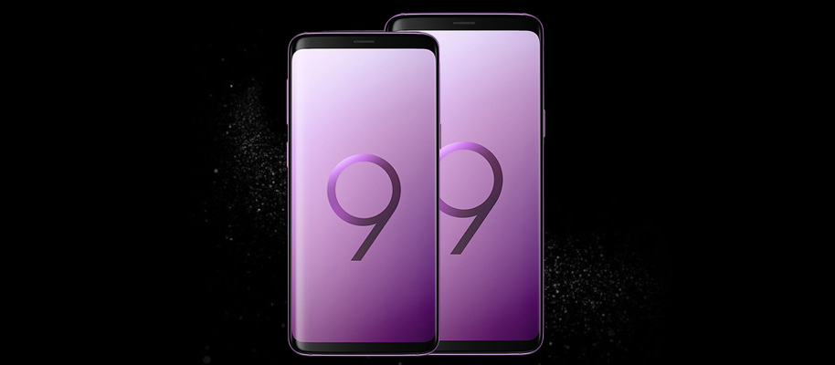
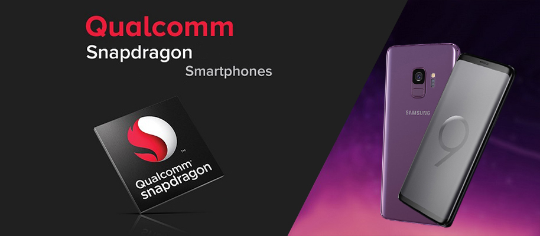
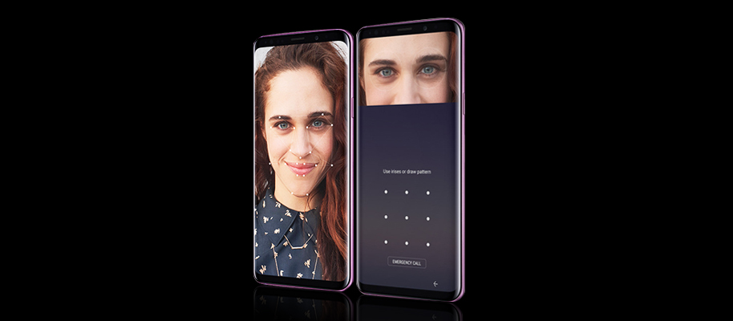

Giống S8 và khác với Note8, Galaxy S9 được cho có tới hai phiên bản với kích cỡ màn hình khác nhau, phù hợp với nhiều người dùng và nhu cầu sử dụng. Phiên bản S9 tiêu chuẩn có màn hình 5.8" trong khi S9+ sở hữu màn hình lên tới 6.2".
Không chỉ có kích thước tương đương với thế hệ tiền nhiệm, kiểu dáng cơ bản của Galaxy S9 không nhiều thay đổi rõ rệt, mà tập trung vào việc hoàn thiện thiết kế đã gây ấn tượng và được đánh giá cao của S8. Cảm biến vân tay ở mặt lưng được đưa xuống bên dưới camera thay vì ngang hàng, thao tác chạm dễ dàng hơn.
Gần như chắc chắn Samsung Galaxy S9/S9+ sẽ có 2 phiên bản với 2 dòng chip khác nhau là Qualcomm Snapdragon và Exynos, và bản bán ra tại thị trường Việt Nam sẽ sở hữu con chip Exynos 9810 8 nhân 64 bit. RAM của S9 là 4GB và được nâng lên 6GB với S9 Plus, còn đều được tích hợp bộ nhớ 64GB. Máy cũng sở hữu 2 SIM 2 sóng và hỗ trợ cả khe cắm thẻ nhớ mở rộng. Và tất nhiên là Samsung S9/S9+ sẽ chạy Android 8 Oreo khi bán ra thị trường với giao diện độc quyền.
Với nhận diện khuôn mặt, quét mống mặt, cảm biến vân tay cùng nền tảng Knox, bộ đôi Galaxy S8 và Note8 đã là những smartphone có tính năng bảo mật đa dạng và tốt nhất trong năm 2017. Nhưng có thể, tính năng và mức độ bảo mật trên Galaxy S9 còn cao hơn thế, không chỉ an toàn mà có thể còn đem lại trải nghiệm tiện dụng hơn nữa.
